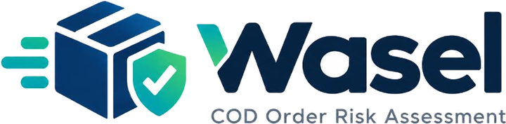
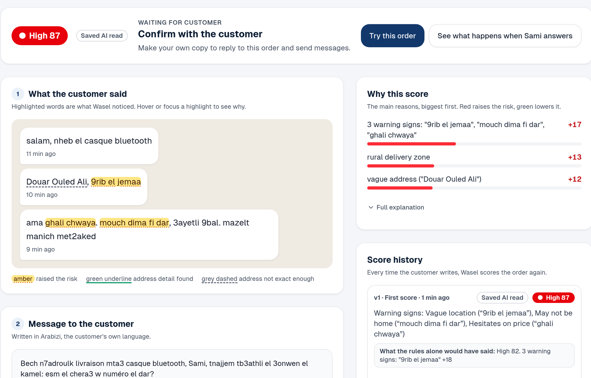
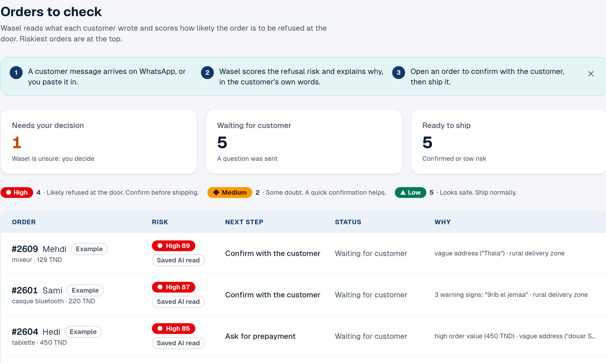

Wasel reads cash-on-delivery orders from chat, scores the chance the customer refuses, and drafts the one question that lowers it.
One vendor guide puts refusals at 15 to 25 % for Tunisian fashion orders. The seller pays for the courier either way.
Sellers read these by eye, one at a time. Wasel reads all of them and quotes the words that worry it.


Each row ends in one next step.
A person sends every message unless the seller switches on automatic sending for clear-cut replies.
Fills a 12-field schema from the chat. Rules take over if no model answers.
Every quote must appear in the original text, or it is dropped.
XGBoost with monotone limits, plus rules in scoring.yaml.
Approved templates in the customer's language, checked three ways.
A person approves what goes out.
The language model never picks a number. That is how we can show the reason behind every score.
A customer who writes "ignore previous instructions" is flagged. The order is still scored, and the address stays unconfirmed.
The route is built and covered by tests. Wasel keeps working with any provider missing, down to the rules extractor.
When the key arrives: make tf-check, then make eval-live.
Try order #2601